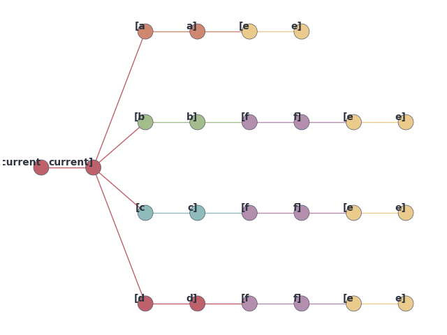

Note
Go to the end to download the full example code
Pathway map for an example#
from io import StringIO
import matplotlib.pyplot as plt
from adaptation_pathways.graph import read_sequence_graph, sequence_graph_to_pathway_map
from adaptation_pathways.plot import init_axes
from adaptation_pathways.plot import plot_default_pathway_map as plot
sequence_graph = read_sequence_graph(
StringIO(
"""
current a
a e
current b
b f
current c
c f
current d
d f
f e
"""
)
)
pathway_map = sequence_graph_to_pathway_map(sequence_graph)
_, axes = plt.subplots(layout="constrained")
init_axes(axes)
plot(axes, pathway_map)
plt.show()
Total running time of the script: (0 minutes 0.044 seconds)